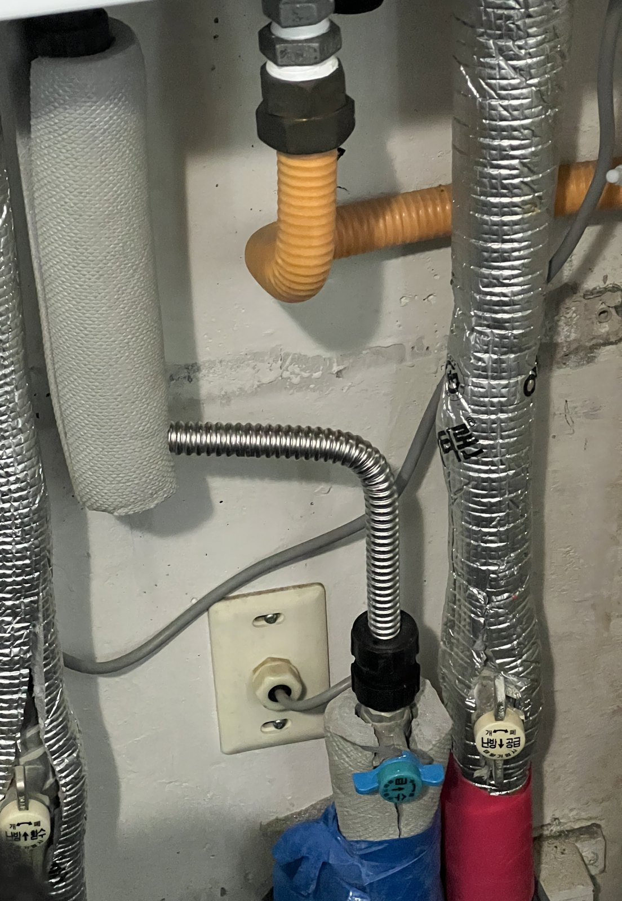
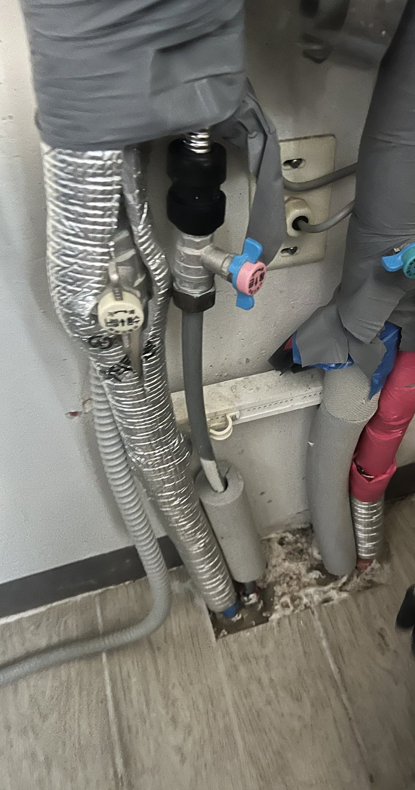
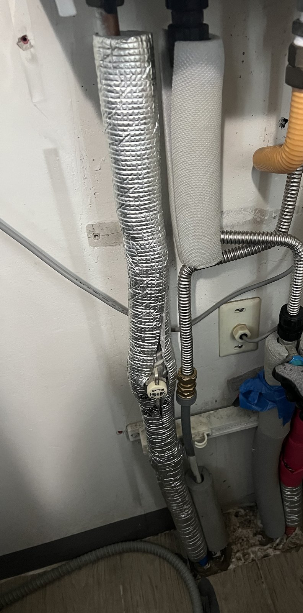

대전 교촌동 미메이드아파트 보일러 아래 온수 배관 보수｜금속 주름관으로 다시 연결

작업 핵심
현장 작업 한눈에 보기
- 현장
- 교촌동 미메이드아파트 · 보일러 아래 온수 배관
- 문제
- 보일러 아래 온수 배관 누수 연락
테이프로 감아 둔 연결 부분 - 작업
- 감아 둔 부분 풀기
새는 구간 금속 주름관으로 다시 연결 - 결과
- 다시 연결한 배관 사진 확인
압력시험 수치·소요시간은 미기재
대전 유성구 교촌동 미메이드아파트 작업입니다. 보일러 아래 온수 배관이 샌다는 연락을 받고, 감아 두었던 연결 부분을 풀어 새는 구간을 금속 주름관으로 다시 연결했습니다. 실제 사진 3장으로 소개합니다.
1. 작업 전 보일러 아래 배관
대전 유성구 교촌동 미메이드아파트 작업입니다. 2026년 11월 12일 아침 사진을 순서대로 소개합니다.
보일러 아래로 내려오는 배관들입니다. 배관 위쪽이 회색 테이프로 감겨 있었습니다.

2. 금속 주름관으로 다시 연결
감아 두었던 부분을 풀고, 벽 쪽 연결구에서 올라가는 온수 배관 구간을 금속 주름관으로 다시 이었습니다.
3. 마무리
보일러 아래 배관 전체를 다시 찍은 모습입니다. 새 금속 주름관이 연결된 자리를 확인할 수 있습니다.

4. 확인한 범위와 상담 안내
이번 기록은 사진으로 확인되는 공정 범위입니다. 압력시험 수치와 총 작업시간은 자료가 없어 적지 않았습니다.
보일러 아래 배관이나 벽 쪽 연결부가 젖어 있으면, 보일러 아래 전체와 젖은 자리를 가까이 찍어 상담해 주세요.